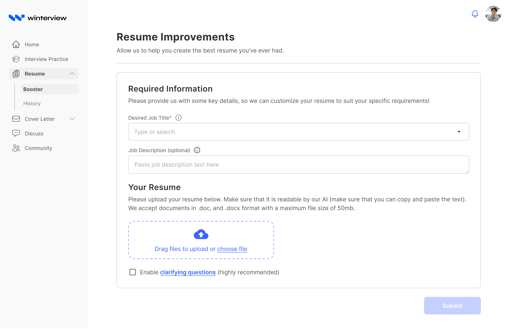
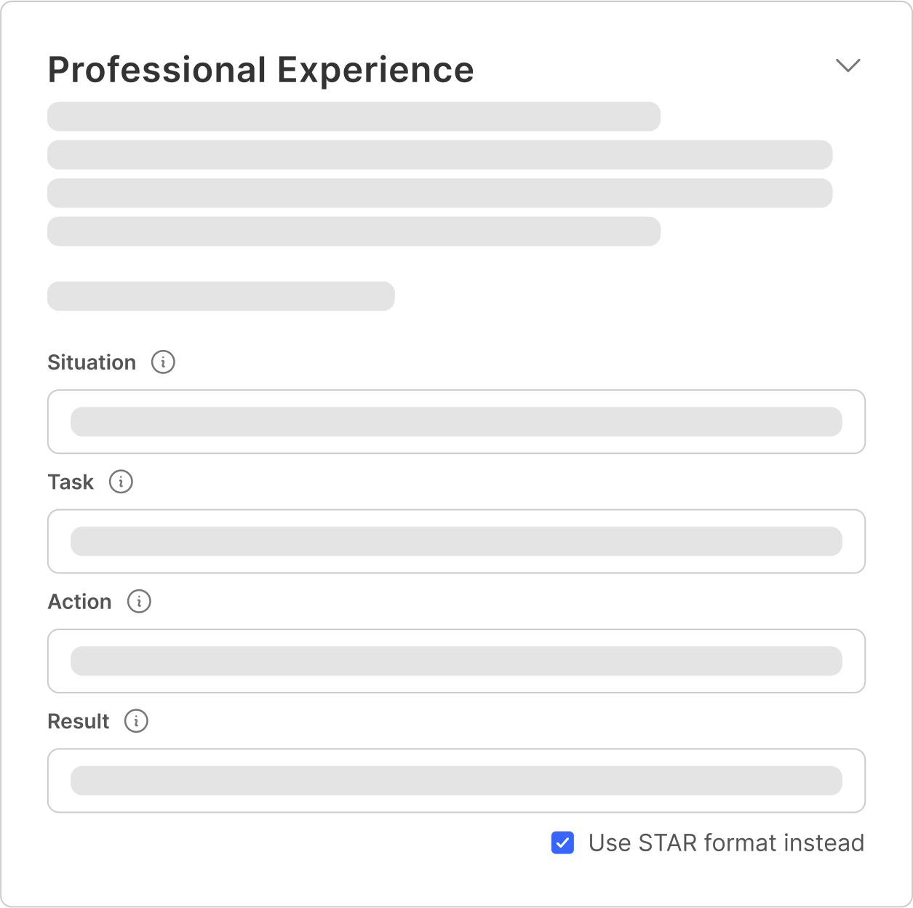
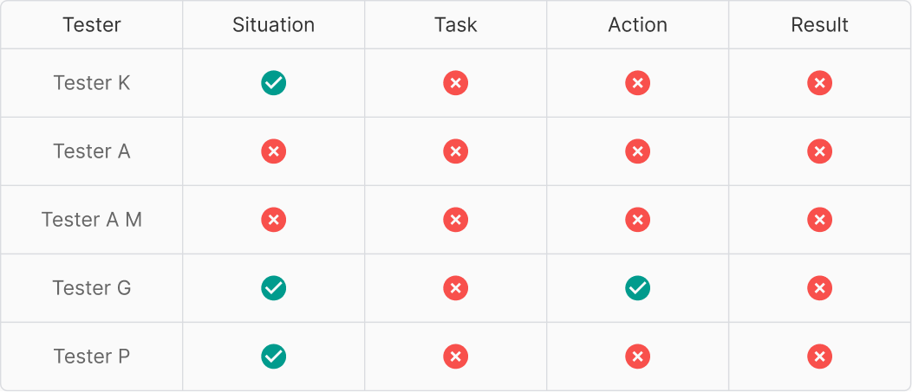
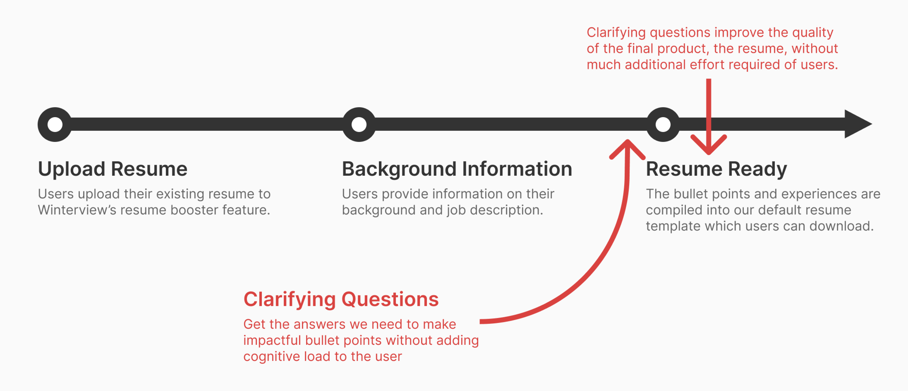
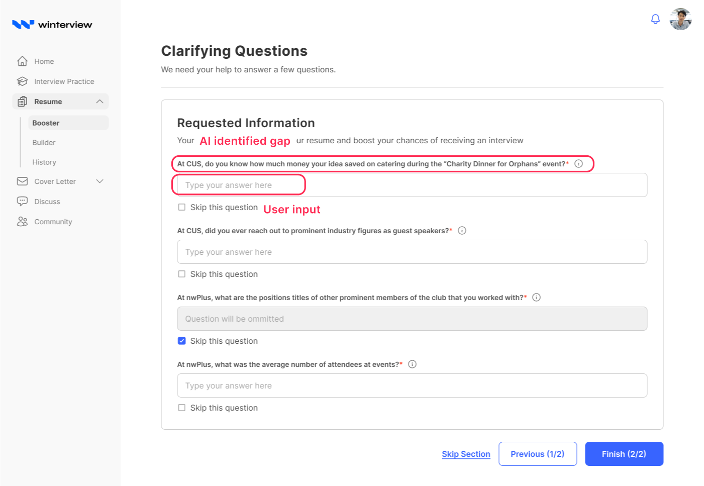
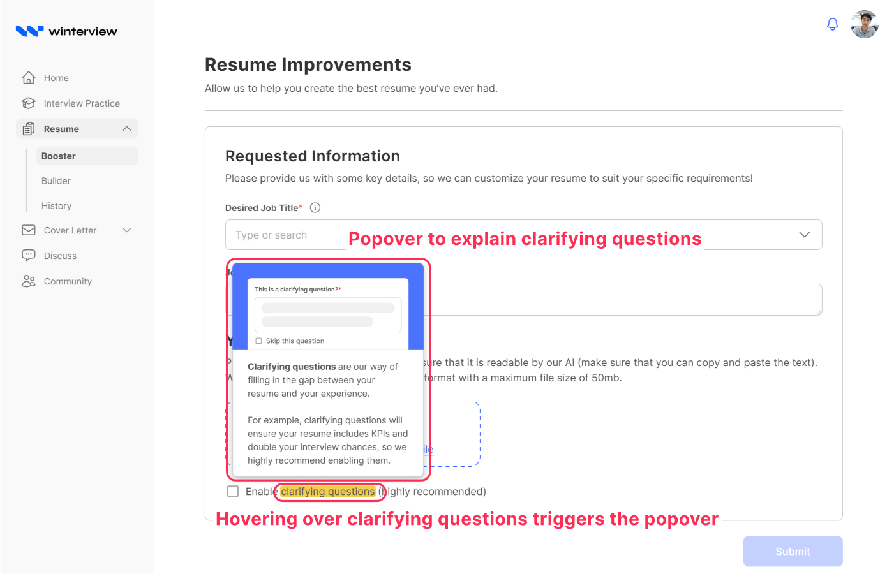
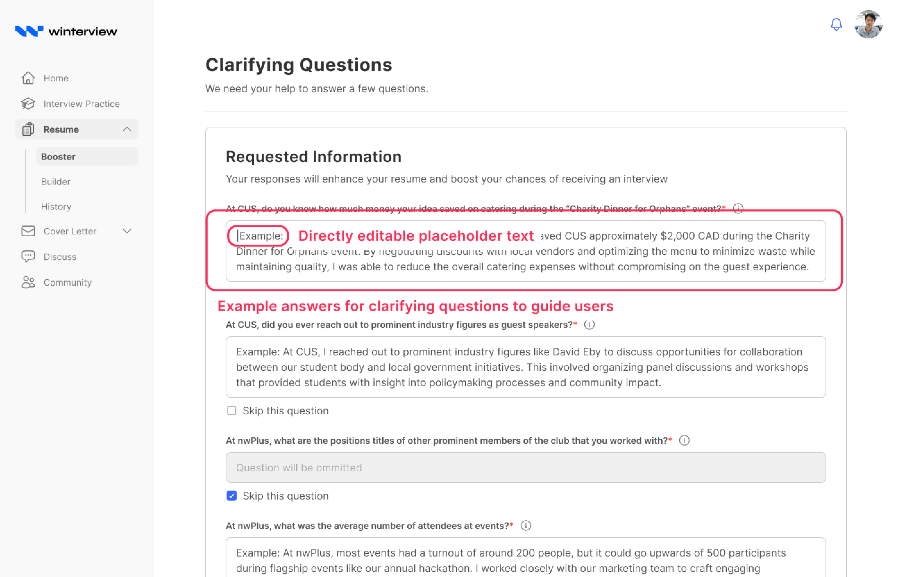
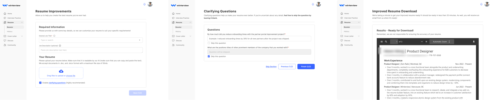

Case Study · Winterview
Clarifying Questions

The problem
Winterview's Resume Booster turns a user's raw experience into polished resume bullets. It wasn't getting used. The people who needed it most, users who didn't already know resume best practices, were the ones who struggled: they left out the details that make a bullet land, and the tool had no way to ask for them.
The question we set out to answer: how might we help users fill in key information gaps?
The first answer was wrong
We started with STAR, the Situation-Task-Action-Result framework that resume advice has recommended for decades. Users filled in each element in sequence, and the AI synthesized the four answers into a finished bullet. On paper it was the obvious solution: a proven framework, a clean mapping to model input, an interface that practically designed itself.
Usability testing took it apart. Three findings, none of them survivable:
- It was too much thinking. Users spent up to four minutes on a single field against a two-minute benchmark. Being asked to classify their own experience into “Situation” versus “Task” was harder than writing the bullet unaided.
- Users didn't buy the premise. Many were skeptical the suggestions were worth the effort, and questioned whether their resume was really the problem in the first place.
- The math didn't work. One STAR bullet took about ten minutes. A full resume would have run to roughly ninety. Nobody was going to spend an afternoon on it.
The framework that was supposed to reduce effort had become the effort.


What we shipped instead
We dropped the framework and asked directly for what was missing. Instead of teaching users a four-part structure, the tool asks one plain question at a time, pointed at the specific gap in the bullet in front of them, like “What % did you improve X by?”
The shift is that the user no longer has to know what a good bullet is made of. The system knows what it's missing and asks for that one thing. Answering takes a sentence, not a taxonomy.


Two refinements after launch
- In-context definitions. Users weren't always sure why a question was being asked or what a good answer looked like, so we explained the intent inline rather than making them guess.
- Editable placeholder examples. Power users, the ones writing three or more resumes a day, didn't need to start from a blank field every time. Pre-filled examples they could edit down cut the repetition out of high-volume work.


The result
Clarifying Questions replaced the STAR flow entirely.
